Partie 5 - Golden Wing
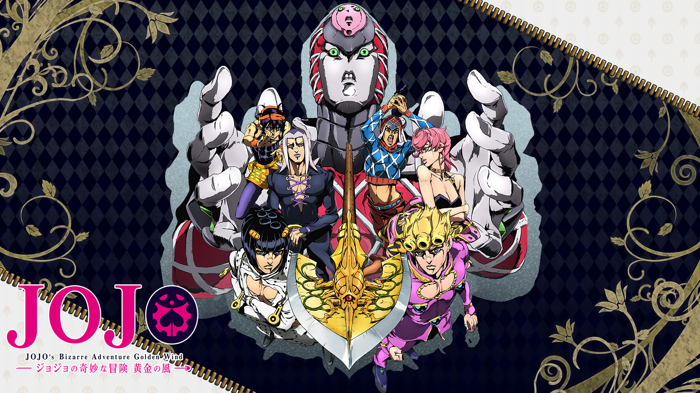
Explication de la partie
Dans cette partie on suit Giorno Giovanna, fils de Dio, qui intègre le gang Passione en Italie pour devenir un "Gang-Star". Il soutenu par l'équipe de Bruno Bucciarati.
Dans cette partie, sachant qu'elle se passe en Italie, chaque nom de personnage est un mot italien (Giorno = jour,...) et elle se passe en 2001.
Protagoniste - Giorno Giovanna
Giorno Giovanna est le fils illégitime de Dio (techniquement c'est un Joestars sachant que Dio avait le corps de Jonathan a ce moment là).
Il manie le Stand Golden Experience qui permet de donner vie a tout (par ex.: il peut donner vie a de l'argent pour les transformer en papillons pour qu'ils viennent a lui). Giorno a comme rêve de devenir chef de la mafia et rejoint donc le gang Passione et a comme objectif de tuer le chef.
Il s'allie donc avec Bruno Bucciarati et sa bande pour terraser le chef. Il fait la rencontre de Trish (fille du patron du gang) et apprend que, sans la flèche Requiem, il ne parviendra pas le battre.
En s'alliant avec Polnareff, il obtient la flèche et elle fusionne avec son Stand qui évolue en Golden Experience Requiem (GER). GER est l'un des Stands les plus puissant de tout Jojo's Bizarre Adventure car il a le pouvoir ultime du « retour à zéro ». Cette capacité annule toute action ou intention hostile contre Giorno en la ramenant à un état nul.
Et si quelqu'un a le malheur de taper Giorno, il sera envoyé dans une boucle ou il moura a l'infini.
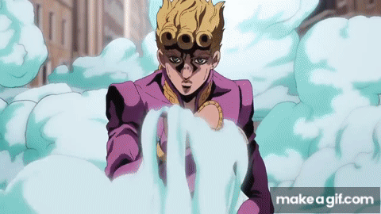
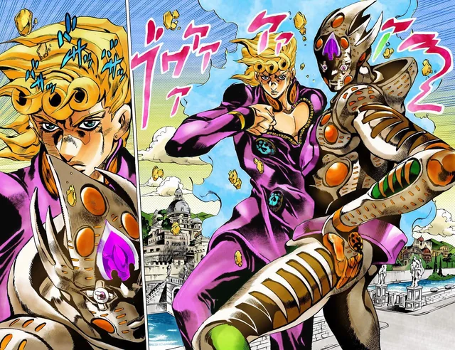

Antagoniste - Diavolo
Diavolo manie le Stand King Crimson, il possede la capacité d'effacer le temps sur une durée de 10 secondes.
Pour cacher son identité et se déplacer tranquilement, il partage le coprs de Doppio. Doppio et Diavolo sont deux personnalités distinctes partageant le même corps, un cas de trouble dissociatif de l'identité.
Diavolo prend le dessus lors des combats ou des situations critiques, tandis que Doppio gère les tâches moins dangereuses. Diavolo utilise Doppio, le manipulant pour agir en son nom sans risquer d'être démasqué.
Diavolo voulait récuperer la flèche Requiem afin de garantir son invincibilité et de protéger son anonymat absolu. Le but était d'obtenir une maîtrise totale du temps (effacement, contrôle, rembobinage), mais a malheureusement échoué sa mission et s'est retrouvé dans un boucle sans fin ou il meurt (a chaque fois des morts différentes et douloureuses)
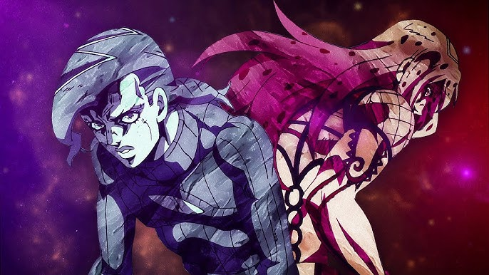
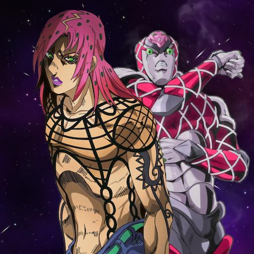
Alliés - Bucciarati, Narancia, Mista, Abbaccio, Trish
Commençons par parler de Bruno Bucciarati, ami le plus proche de Giorno et aussi son Jobro, il manie le Stand Sticky Fingers, qui lui permet de créer des fermetures éclair n'imprte-ou et il peut y entrer.
Il meurt tragiquement en se faisant transpercer le ventre pas King Crimson. Il était sensé mourir a ce moment là mais Gold Experience a imprégné son corps de vie, lui permettant ainsi d'utiliser son corps un peu plus longtemps. Il meurt donc a la fin de la partie, après avoir vaincu Diavolo.
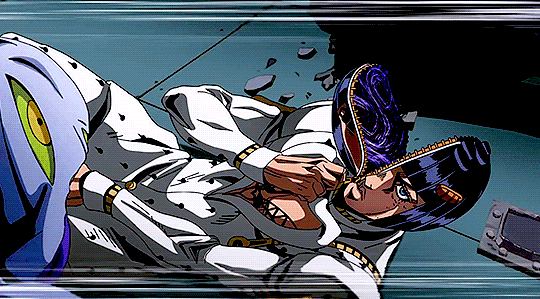
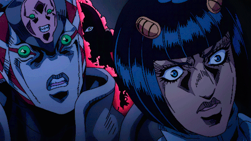
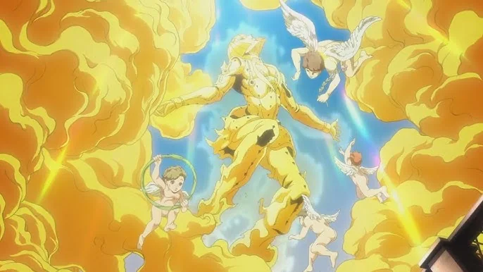
Ensuite parlons de Narancia Ghirga, il est membre du groupe de Bucciarati, il manie le Stand Aerosmith, un avion de chasse miniature équipé de mitrailleuses, d'une bombe et d'un radar détectant le dioxyde de carbone.
Il est tué par Diavolo, qui utilise sa capacité de suppression du temps pour empaler Narancia sur des barreaux, le rendant instantanément inanimé. Sa mort est stratégique, visant à éliminer la menace de son radar.
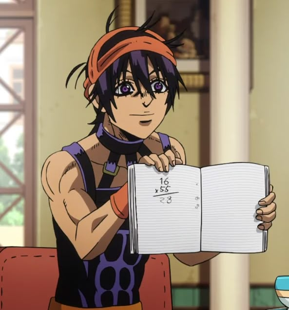
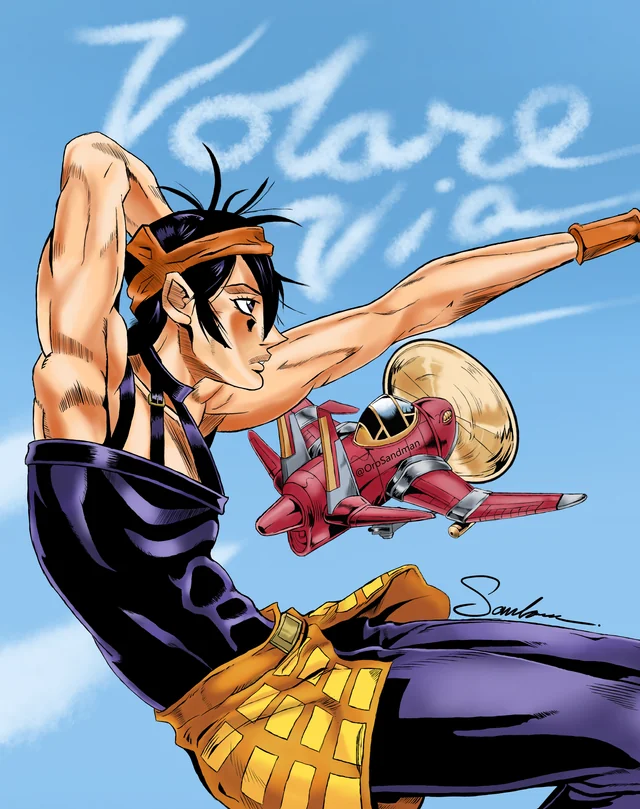
Passons ensuite sur Guido Mista, il fait aussi partie du groupe de Bucciarati et manie le Stand Sex Pistols, se composant de six petites créatures (numérotées de 1 à 7, sautant le 4, car le chiffre 4 porte malheur a Mista) vivant dans son revolver.
Elles manipulent la trajectoire des balles après le tir, permettent des tirs en ricochet complexes, rechargent l'arme et défendent Mista.
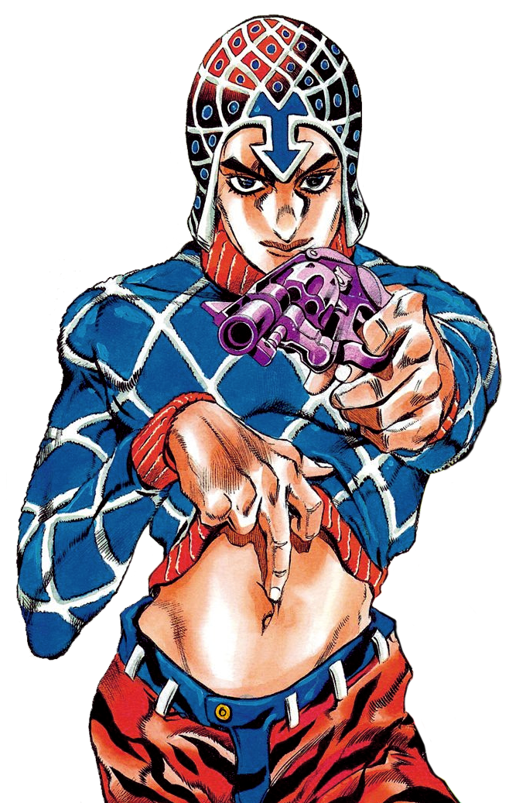
Vient ensuite Leone Abbaccio, il fait aussi partie du groupe de Bucciarati, il manie le Stand Moody Blues.
Il possède la capacité unique de rejouer des événements passés survenus à un endroit précis, agissant comme un enregistreur vidéo humain. Il peut se transformer en n'importe qui pour révéler des actions cachées, des secrets ou des indices, mais est vulnérable pendant l'enregistrement.
Il est tué par le Boss, Diavolo (via son Stand King Crimson), qui s'infiltre pour éliminer la menace que représente la capacité de Moody Blues à révéler son passé.


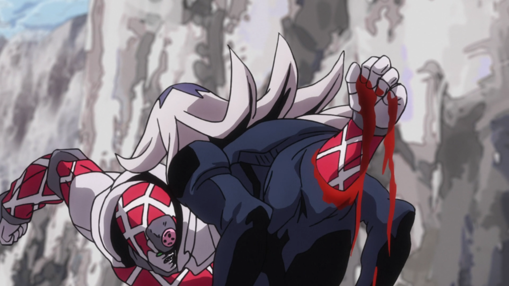
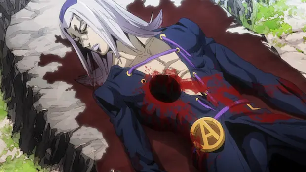
Pour finir parlons de Trish Una, fille du boss de la mafia Passione, Diavolo. Initialement protégée par l'équipe de Bruno Bucciarati contre la Squadra di Esecuzione, elle éveille son Stand, Spice Girl.
Sa capacité unique consiste à ramollir n'importe quel objet non vivant qu'elle frappe, le rendant extrêmement élastique et virtuellement indestructible.
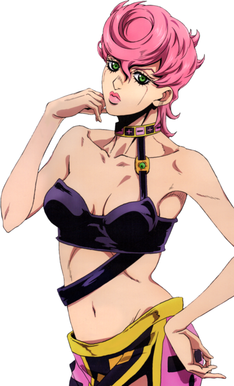
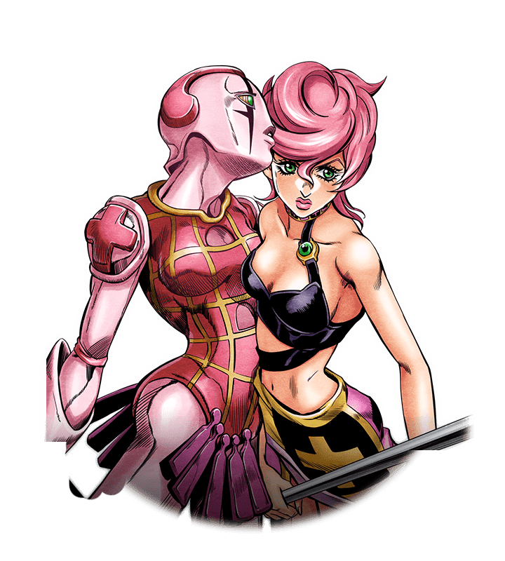